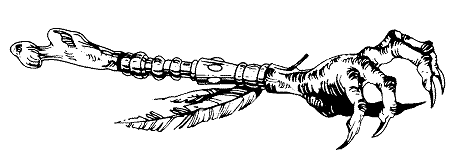

Comme vous vous précipitez vers la porte, vous glissez sur une flaque de sang, et vous tombez à terre. Les chiens bondissent sur vous, et vous allez devoir les combattre. Mais, puisque vous êtes désavantagé par votre position, vous devrez déduire 2 points de votre Force d'Attaque, pendant les quatre premiers Assauts.
